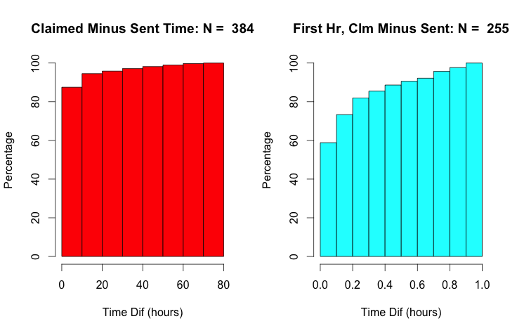
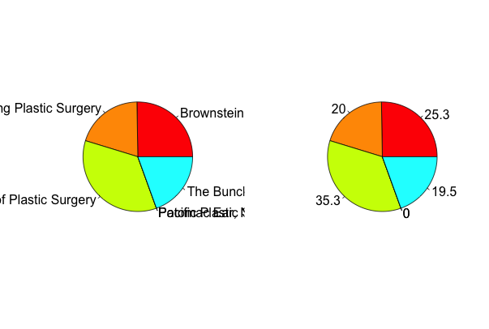
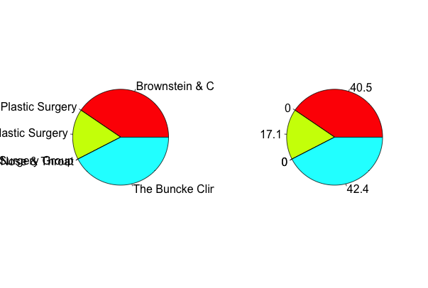

--------- Time lag between sending and claiming invite
(L: all ; R: time lag only in first hr)

(Made by oct_clmtimePlots.R , 10.26.2015)
--------- Time lag between sending and claiming invite, cumulative
(L: all ; R: time lag only in first hr)

(Made by oct_clmtimePlots.R , 10.26.2015)
--------- Which clinic sent invites
(L: name ; R: percentage )

(Made by oct_clinicInfo.R , 10.26.2015)
--------- Which clinic sent invites including only claimed invites
(L: name ; R: percentage )

(Made by oct_clinicInfo.R , 10.26.2015)
--------- Which clinic sent invites, only including ones sent POST-Sept 1
(L: name ; R: percentage )
(Made by oct_clinicInfo.R , 10.26.2015)

--------- Which clinic sent invites, only including ones sent PRE-Sept 1
(L: name ; R: percentage )

(Made by oct_clinicInfo.R , 10.26.2015)
--------- Sent invites broken down by gender
(L: gender ; R: percentage )

(Made by oct_userInfo.R , 10.26.2015)
--------- Sent invites broken down by type of invite
(L: type: 0 = Famtree, 1 = Admin, 2 = Intake ; R: percentage )

(Made by oct_userInfo.R , 10.26.2015)
--------- Birth Year

(Made by oct_healthProfileStats.R , 10.26.2015)
--------- Invited to Completed Funnel
(Made by oct_userInfo.R , 10.28.2015)
--------- Number of invites sent
(Made by oct_userInfo.R , 11.2.2015)
Probs:
- Appt times are looking very weird
- Parsing conditions string